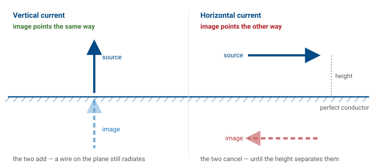
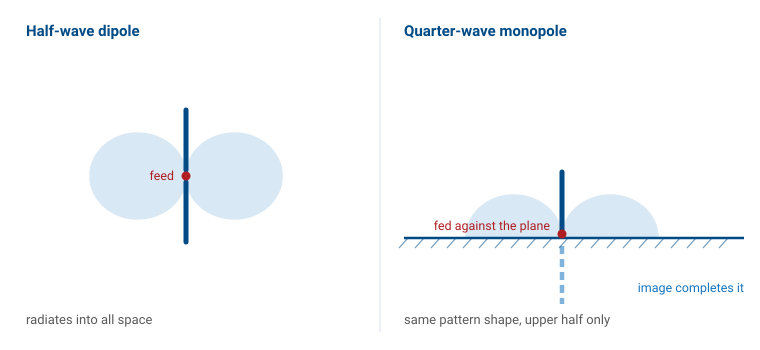
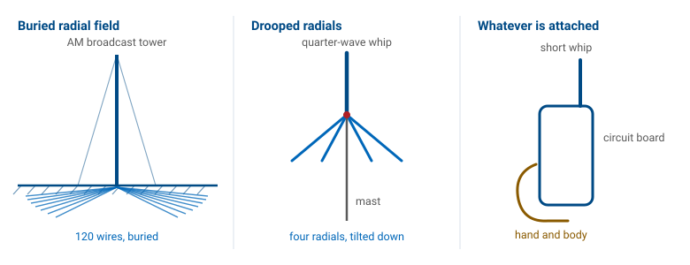
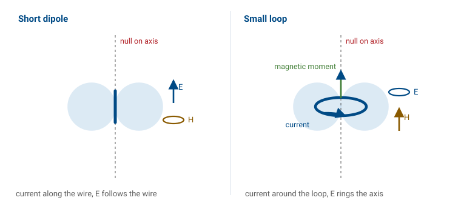

L12 - Loop and Monopole Antennas#
Loop and Monopole Antennas
A mirror turns a dipole into a monopole, and a ring of current turns it into its magnetic twin.
Lesson 12 · Antennas, Phased Arrays, and Radar Systems · Dr. Neil Rogers
Slides
Learning Objectives
- I can apply image theory to build a quarter-wave monopole out of a half-wave dipole, and state its impedance, its directivity, and why it only radiates into a hemisphere.
- I can explain what an imperfect ground does to a monopole, and why radial systems and counterpoises exist.
- I can describe the electrically small loop as a magnetic dipole — its pattern, its very small radiation resistance, and why small loops are receiving and sensing antennas rather than efficient transmitters.
- I can distinguish the electrically small loop from the resonant loop, and connect the limits on small antennas back to the bandwidth-size trade.
Where We Were
Lessons 9 to 11 taught you to check an antenna: match, pattern, gain, and how much of each to believe.
Lessons 12 to 14 give you antennas worth checking.
Today: the monopole and the small loop.
Lesson 7 gave you two reference antennas — the isotropic radiator you measure gain against, and the half-wave dipole at \(73 + j42.5\ \Omega\) and 2.15 dBi — and Lesson 8 put a dipole into a simulator so you could watch those numbers appear. You have since put an antenna on an analyzer and on a range, so every impedance and every gain figure from here on is a claim you know how to test.
Today you get the other two wire antennas that show up everywhere in the field: the monopole standing on a ground plane, which is half a dipole and behaves exactly like it, and the small loop, which is the dipole’s magnetic twin and behaves nothing like it. One of them is on every vehicle, tower, and handheld radio you will ever touch. The other is how you find a hidden transmitter.
Image Theory and the Sign Rule
A vertical current images in phase — the image points the same way.
A horizontal current images out of phase — the image points the other way.

Put an antenna above a large, perfectly conducting plane and you have a boundary-value problem: the tangential electric field must vanish everywhere on the conductor. Solving that directly is unpleasant. Image theory says you do not have to. Delete the conductor, add a mirror-image source below where the plane used to be, and choose the image’s sign so that the tangential field cancels on the old boundary. The two sources together satisfy the same boundary condition, so above the plane they produce the identical field. Below the plane the pair produces a field that describes nothing physical, and there is no field there in any case because the conductor shorts it out.
Image theory needs the plane to be a perfect conductor and, strictly, infinite. Neither is ever true, and the third part of this lesson is about what you pay for that.
Height Does Not Save a Horizontal Wire
A vertical wire and its image add, however close to the plane you push it.
A horizontal wire and its image subtract, and cancel exactly at zero height.
The consequence matters more than the derivation. A vertical antenna works even when it is sitting right on the ground, and a horizontal wire laid on the ground radiates essentially nothing. That is why broadcast towers are vertical and why your field-expedient dipole has to get up in the air.
Element Plus Image Is a Two-Element Array
At the horizon \(\cos\theta = 0\): vertical gives 2, horizontal gives zero.
Perfect ground always nulls horizontal polarization along the ground.
Once you have the image, the problem is one you already solved in Lesson 6: two sources, so the pattern is the element factor times a two-element array factor. With the element at height \(h\) and its image at \(-h\), the phase difference between the two paths is \(2kh\cos\theta\), with \(\theta\) measured from the vertical and only \(0 \le \theta \le 90^\circ\) meaning anything. No amount of height fixes the horizon null; height only decides where the first lobe lands.
Cut a Dipole in Half
Cut a half-wave dipole in half, discard the bottom, and stand the top on a ground plane.
The image restores the missing half: identical pattern shape, identical current.

Drive the remaining quarter wavelength against the plane at its base and, above the plane, the fields are the fields of the full half-wave dipole. Two things change, and both follow from bookkeeping rather than from new physics.
Impedance Halves, Directivity Doubles
Half the structure at the same current takes half the voltage.
The same beam fills half the solid angle.
The 3 dB is free the way a mirror gives free light. The power that went down now goes sideways.
Dipole Against Monopole
Quantity |
Half-wave dipole |
Quarter-wave monopole |
|---|---|---|
Length |
\(0.5\lambda\) |
\(0.25\lambda\) |
\(Z_{\text{in}}\) |
\(73 + j42.5\ \Omega\) |
\(36.5 + j21.3\ \Omega\) |
Trimmed |
\(0.47\lambda\), \(70\ \Omega\) |
\(0.24\lambda\), \(36\ \Omega\) |
Directivity |
2.15 dBi |
5.15 dBi |
Coverage |
all space |
upper hemisphere |
The elevation half-power beamwidth halves too, from \(78^\circ\) to \(39^\circ\), because you are seeing the upper half of the same beam. A quarter-wave monopole over a good ground plane is a half-wave dipole with a mirror, and nothing about it is new physics.
Worked Example — a 146 MHz Whip
Design a quarter-wave monopole for the middle of the 2 m band and see how well it matches \(50\ \Omega\).
Length. \(\lambda = c/f = (3\times10^8)/(146\times10^6) = 2.05\ \text{m}\), so \(\lambda/4 = 0.514\ \text{m}\) — a 51 cm whip.
Match as-built. With \(Z_{\text{in}} = 36.5 + j21.3\ \Omega\) against \(50\ \Omega\),
Match after trimming. Shorten the whip by about 4% to \(0.24\lambda = 49\ \text{cm}\) to cancel the reactance. Now \(Z_{\text{in}} \approx 36\ \Omega\) real, and VSWR \(= 50/36 = 1.39\).
Match after tilting the radials. Droop four quarter-wave radials down about \(45^\circ\) and the base impedance climbs to roughly \(50\ \Omega\): VSWR near 1.0, no matching network, no extra parts. This is why commercial ground-plane antennas have sagging radials — and it is a prediction you could confirm on the analyzer from Lesson 10 in about ten minutes.
Height Above Ground
Drag the height slider to compare the two rules. Start with the vertical element at the bottom of its range: the pattern is the monopole’s, the directivity readout parks at 3.28, and the peak sits on the horizon. Then switch to the horizontal wire at the same height and look at the third pill — the directivity is higher, but the radiated power has collapsed by more than 10 dB, because the image is canceling the source. Raise the horizontal wire and watch that power come back as the first lobe forms overhead.
Directivity and Gain Part Company
A horizontal wire at \(0.05\lambda\) has a 9 dBi pattern shape pointed straight up and radiates almost nothing. Cancellation shows up in the radiation resistance, not in the pattern. Check both numbers.
Directivity only describes the shape of what gets out. This is the first place in the course where the two quantities separate far enough to matter, and it is worth holding onto: a datasheet that quotes directivity where you expected gain is not necessarily lying, but it is not answering your question either.
Real Ground Is Not a Mirror
Return current dissipates in the soil.
A monopole has only \(36.5\ \Omega\) of \(R_r\) to spend.
Real earth cannot support a grazing field, so the horizon lobe is lost.
5.15 dBi is an upper bound.
Real ground is a lossy dielectric. The loss appears in series with the feed as a ground resistance \(R_g\), which is why AM broadcast stations bury a radial system — the FCC standard is 120 buried wires, each a quarter wavelength long, fanning out from the tower base. The radials do not radiate. They intercept the return current in copper instead of in dirt. And because the reflection coefficient falls away near the horizon, the elevation angle at which your energy actually leaves is set by the ground, not by the antenna.
Three Ways to Fake a Ground

A whip on a car roof at 800 MHz sees many wavelengths and behaves.
The same whip at 30 MHz sees \(0.01\lambda\) and behaves like a capacitor.
When you cannot get a plane, you fake one with a counterpoise.
Four drooping radials on a mast, a metal disc under a GPS patch, the ground pour on a circuit board — all counterpoises. On a handheld radio the counterpoise is the case, the board, and your hand, which is why gripping a handheld differently changes both its impedance and its pattern, and why handheld radios are tested against a phantom hand.
If you go back to the simulator from Lesson 8 to model a monopole, remember that the model needs an explicit ground: a perfect-conductor plane for the textbook answer, or a real-earth model with a conductivity and a permittivity for the realistic one. Feed the base segment against that plane. A monopole modeled in free space with no ground is a very short dipole, and the simulator will return a number that does not describe the antenna you meant to build.
The Small Loop Is a Magnetic Dipole
Circumference well under a wavelength — \(C < 0.1\lambda\) is the usual line.
The current is uniform all the way around, in phase.
The result is an oscillating magnetic moment \(m = IA\), the exact dual of the short dipole.
Now change the current’s shape instead of its neighborhood. There is not enough electrical length around a small loop for the current to vary, so feed that uniform ring current into the radiation integral from Lesson 6 and everything comes out as the dual of the short dipole. A short dipole is an oscillating electric dipole moment; a small loop is a magnetic one, pointing along the loop axis by the right-hand rule. The fields simply trade places.
Short Dipole Against Small Loop
Short dipole |
Small loop |
|
|---|---|---|
Source |
\(I\) along \(\ell\) |
\(I\) around \(A\) |
Far field |
\(E_\theta\), \(H_\phi\) |
\(E_\phi\), \(H_\theta\) |
Pattern |
\(\sin\theta\) |
\(\sin\theta\) |
Directivity |
1.76 dBi |
1.76 dBi |
Null |
along the wire |
along the axis |
\(R_r\) |
\(80\pi^2 (\ell/\lambda)^2\) |
\(20\pi^2 (C/\lambda)^4\) |
Maximum in the Plane, Null Through the Hole

Same donut, polarization rotated \(90^\circ\).
Maximum in the plane of the loop, null through the hole.
That null is how direction finding works.
The null placement is the opposite of what most people expect. You rotate the loop until the signal disappears, and the bearing is precise because a null is sharp while a pattern maximum is broad — the same asymmetry you exploited when you read a measured pattern in Lesson 11, and the same one that made null depth the hardest number on that lab to defend.
The Fourth-Power Penalty
Both forms punish small size severely.
Halve the loop and \(R_r\) drops by a factor of 16.
The exponent is the whole point. A single-turn loop at \(C = 0.1\lambda\) has a radiation resistance of about 20 milliohms — roughly the resistance of a short piece of the wire it is made from, which is exactly the problem.
Worked Example — a 30 MHz Loop
A single-turn copper loop, \(C = 0.1\lambda\) at \(f = 30\ \text{MHz}\) (\(\lambda = 10\ \text{m}\)), made of 4 mm diameter wire (\(b = 2\ \text{mm}\)). Loop radius \(a = C/2\pi = 0.159\ \text{m}\).
Radiation resistance. \(R_r = 20\pi^2 (0.1)^4 = 0.0197\ \Omega\) — 20 milliohms.
Loss resistance. Copper surface resistance at 30 MHz is \(R_s = \sqrt{\pi f \mu_0/\sigma} = 1.43\ \text{m}\Omega\) per square, and the loop is \(C/2\pi b = 79.6\) squares around:
Efficiency. \(\eta_{\text{rad}} = 0.0197/(0.0197 + 0.114) = 0.148\), i.e. 14.8%, a loss of 8.3 dB. Gain \(= 1.76 - 8.3 = -6.5\ \text{dBi}\).
What that means at the feed. To deliver 100 W you need \(I = \sqrt{2P/R_{\text{total}}} = 38.7\ \text{A}\) peak in that loop, of which 15 W radiates and 85 W heats the wire. This is why transmitting magnetic loops are built from thick copper tubing with welded joints and a vacuum capacitor.
Why Receive Loops Are Everywhere Anyway
On receive you are not fighting efficiency, you are fighting noise.
At HF and below, atmospheric noise dominates, so a lossy antenna still delivers a sky-limited signal-to-noise ratio.
\(N\) turns: \(R_r\) goes as \(N^2\), loss only as \(N\).
Receiving is a different economy entirely, and a loop that is a poor transmitter can be a good receiving antenna. Wrap those turns on a ferrite rod and the effective permeability multiplies the moment again. The bar behind the dial of an AM radio is a many-turn ferrite loop; its efficiency is very low, and at broadcast frequencies that costs nothing that matters.
Grow It to One Wavelength
At \(C \approx 1\lambda\) the current reverses around the loop.
The pattern flips: maximum along the axis, where the small loop had its null.
\(R_{\text{in}}\) rises to \(100\)–\(130\ \Omega\), directivity about 3.1 dBi.
This is the loop you can transmit with efficiently, a little under 1 dB better than a dipole, and it is the element in a quad antenna. Nothing about the geometry changed except its size in wavelengths, which is the recurring lesson of this whole module.
Small Loop Against Resonant Loop
Small loop |
Resonant loop |
|
|---|---|---|
Circumference |
\(< 0.1\lambda\) |
\(\approx 1\lambda\) |
Current |
uniform |
reverses |
Maximum |
in the plane |
along the axis |
\(R_{\text{in}}\) |
milliohms |
\(100\)–\(130\ \Omega\) |
Used for |
receiving, finding |
transmitting |
Small Is Expensive Twice
Shrinking drives \(R_r\) toward zero, which wrecks efficiency.
It drives stored-to-radiated energy up, which wrecks bandwidth.
Loss resistance is the only thing that broadens a small antenna, and it broadens it by throwing your power away.
The gap between those two columns is the same trade you met in Lesson 3. An antenna that fits inside a sphere of radius \(a\) stores far more energy in its near field than it radiates each cycle, and the Chu limit puts a floor on the resulting quality factor, so the fractional bandwidth — roughly \(1/Q\) — collapses as the cube of the size. The 30 MHz loop above has \(ka = 0.1\), so \(Q \approx 10^3\) and its matched bandwidth is on the order of 0.1%: about 30 kHz at 30 MHz, which is why magnetic loops are retuned every time you move across a band.
Summary
Symbol / idea |
What it says |
Number to remember |
|---|---|---|
Image theory |
vertical images in phase, horizontal reversed |
a horizontal wire on the ground radiates nothing |
\(Z_{\text{in}}^{\text{mono}} = \tfrac{1}{2}Z_{\text{in}}^{\text{dipole}}\) |
half the structure, half the voltage |
\(36.5 + j21.3\ \Omega\) |
\(D_{\text{mono}} = 2D_{\text{dipole}}\) |
same beam into half the solid angle |
3.28, or 5.15 dBi |
Radial system / counterpoise |
a low-loss path for the return current |
120 buried radials; 4 drooped \(\approx 50\ \Omega\) |
\(\eta_{\text{rad}} = R_r/(R_r + R_g + R_{\text{ohmic}})\) |
ground and copper loss compete with radiation |
a few ohms matters when \(R_r\) is small |
Small loop |
magnetic dipole, null on the axis |
\(D = 1.5\) (1.76 dBi) |
\(R_r = 20\pi^2 (C/\lambda)^4\) |
fourth power in circumference |
\(0.02\ \Omega\) at \(C = 0.1\lambda\) |
Resonant loop, \(C \approx 1\lambda\) |
current reverses, maximum swings onto the axis |
\(100\)–\(130\ \Omega\), \(\approx 3.1\) dBi |
Chu limit, \(Q \gtrsim 1/(ka)^3\) |
small antennas store far more than they radiate |
\(ka = 0.1 \rightarrow\) about 0.1% bandwidth |
Practice
Where This Is Going
You now have the complete wire toolkit: dipole, monopole, loop, and the image trick.
Lesson 13 leaves wires for printed and aperture antennas: patch, slot, horn.
The radiating object becomes a surface or an opening.
The patch behaves much like two slots over a ground plane, and you will use image theory again to understand why it works at all.
The other thread from today runs into Module 3. A monopole is an element plus one image; an array is an element plus many neighbors, and the same element-factor-times-array-factor bookkeeping handles both. When you get to pattern multiplication in Lesson 16, notice that you have already done it once — the height-above-ground curve you played with today is a two-element array whose second element happens to be a reflection.